<!DOCTYPE html>
<html>
<head><meta name="generator" content="Hexo 3.8.0">
  <meta charset="utf-8">
  

  
  <title>002-GIT | Hexo</title>
  <meta name="viewport" content="width=device-width, initial-scale=1, maximum-scale=1">
  <meta name="description" content="[TOC] 版本控制简介集中式版本控制系统(SVN)版本库是集中存放在中央服务器的，而干活的时候，用的都是自己的电脑，所以要先从中央服务器取得最新的版本，然后开始干活，干完活了，再把自己的活推送给中央服务器。中央服务器就好比是一个图书馆，你要改一本书，必须先从图书馆借出来，然后回到家自己改，改完了，再放回图书馆。集中式版本控制系统最大的毛病就是必须联网才能工作。 分布式版本控制系统(GIT)分布式">
<meta property="og:type" content="article">
<meta property="og:title" content="002-GIT">
<meta property="og:url" content="http://yoursite.com/2019/06/08/002-GIT/index.html">
<meta property="og:site_name" content="Hexo">
<meta property="og:description" content="[TOC] 版本控制简介集中式版本控制系统(SVN)版本库是集中存放在中央服务器的，而干活的时候，用的都是自己的电脑，所以要先从中央服务器取得最新的版本，然后开始干活，干完活了，再把自己的活推送给中央服务器。中央服务器就好比是一个图书馆，你要改一本书，必须先从图书馆借出来，然后回到家自己改，改完了，再放回图书馆。集中式版本控制系统最大的毛病就是必须联网才能工作。 分布式版本控制系统(GIT)分布式">
<meta property="og:locale" content="default">
<meta property="og:image" content="http://yoursite.com/2019/06/08/002-GIT/002-GIT.resources/F8506B7C-422F-43D7-8129-32364C57CB7E.png">
<meta property="og:image" content="http://yoursite.com/2019/06/08/002-GIT/002-GIT.resources/2B76325D-D9D5-4F70-8968-2E27AB129BFB.png">
<meta property="og:image" content="http://yoursite.com/2019/06/08/002-GIT/002-GIT.resources/2970233D-B4D2-44E8-A9F8-28AC2CC6CDAF.png">
<meta property="og:image" content="http://yoursite.com/2019/06/08/002-GIT/002-GIT.resources/3F155596-8548-4FC9-969F-0290A712CBF8.png">
<meta property="og:image" content="http://yoursite.com/2019/06/08/002-GIT/002-GIT.resources/FA6565A2-7291-4683-B6A2-9E9EED0F7FED.png">
<meta property="og:image" content="http://yoursite.com/2019/06/08/002-GIT/002-GIT.resources/A7B7DBD3-A3D2-40E4-98CE-5230F43BF3BB.png">
<meta property="og:image" content="http://yoursite.com/2019/06/08/002-GIT/002-GIT.resources/544E3B47-4B90-4229-9AED-9A38B1B15A09.png">
<meta property="og:image" content="http://yoursite.com/2019/06/08/002-GIT/002-GIT.resources/372D3DBB-01A4-4597-BC52-D8F8DD27573F.png">
<meta property="og:image" content="http://yoursite.com/2019/06/08/002-GIT/002-GIT.resources/AEA62412-9DC6-4144-8072-CF123FF2BE54.png">
<meta property="og:image" content="http://yoursite.com/2019/06/08/002-GIT/002-GIT.resources/847912BE-E51C-4DE5-BB9C-2C901B2D5696.png">
<meta property="og:image" content="http://yoursite.com/2019/06/08/002-GIT/002-GIT.resources/F9615968-CE6F-4CE9-8EFA-5A97B6250F35.png">
<meta property="og:image" content="http://yoursite.com/2019/06/08/002-GIT/002-GIT.resources/0E85FD39-3F55-48D2-A179-69E23E55E6DC.png">
<meta property="og:image" content="http://yoursite.com/2019/06/08/002-GIT/002-GIT.resources/51AF492B-FBB0-4644-99DF-BAB12A9B8DF6.png">
<meta property="og:image" content="http://yoursite.com/2019/06/08/002-GIT/002-GIT.resources/A49BA4E0-A387-4F8D-B4C5-4DA6A99B399D.png">
<meta property="og:image" content="http://yoursite.com/2019/06/08/002-GIT/002-GIT.resources/F3E43FD2-428A-4E0B-8F2C-2040E41B88F1.png">
<meta property="og:image" content="http://yoursite.com/2019/06/08/002-GIT/002-GIT.resources/39871895-CFCA-4802-9ADF-BDE3E8C00AA9.png">
<meta property="og:image" content="http://yoursite.com/2019/06/08/002-GIT/002-GIT.resources/DF205D96-9B3D-487C-9B1D-207E74E912FA.png">
<meta property="og:image" content="http://yoursite.com/2019/06/08/002-GIT/002-GIT.resources/A69ADCDE-3CF9-4038-AEDB-47FDEDDDD8BB.png">
<meta property="og:image" content="http://yoursite.com/2019/06/08/002-GIT/002-GIT.resources/2BA796E6-96C6-46A3-842F-A2E3390D6882.png">
<meta property="og:image" content="http://yoursite.com/2019/06/08/002-GIT/002-GIT.resources/25BACAD5-7C82-4ABD-BF2B-F44DCD0DFF25.png">
<meta property="og:updated_time" content="2019-06-08T14:23:35.175Z">
<meta name="twitter:card" content="summary">
<meta name="twitter:title" content="002-GIT">
<meta name="twitter:description" content="[TOC] 版本控制简介集中式版本控制系统(SVN)版本库是集中存放在中央服务器的，而干活的时候，用的都是自己的电脑，所以要先从中央服务器取得最新的版本，然后开始干活，干完活了，再把自己的活推送给中央服务器。中央服务器就好比是一个图书馆，你要改一本书，必须先从图书馆借出来，然后回到家自己改，改完了，再放回图书馆。集中式版本控制系统最大的毛病就是必须联网才能工作。 分布式版本控制系统(GIT)分布式">
<meta name="twitter:image" content="http://yoursite.com/2019/06/08/002-GIT/002-GIT.resources/F8506B7C-422F-43D7-8129-32364C57CB7E.png">
  
    <link rel="alternate" href="/atom.xml" title="Hexo" type="application/atom+xml">
  
  
    <link rel="icon" href="/favicon.png">
  
  
    <link href="//fonts.googleapis.com/css?family=Source+Code+Pro" rel="stylesheet" type="text/css">
  
  <link rel="stylesheet" href="/css/style.css">
</head>
</html>
<body>
  <div id="container">
    <div id="wrap">
      <header id="header">
  <div id="banner"></div>
  <div id="header-outer" class="outer">
    <div id="header-title" class="inner">
      <h1 id="logo-wrap">
        <a href="/" id="logo">Hexo</a>
      </h1>
      
    </div>
    <div id="header-inner" class="inner">
      <nav id="main-nav">
        <a id="main-nav-toggle" class="nav-icon"></a>
        
          <a class="main-nav-link" href="/">Home</a>
        
          <a class="main-nav-link" href="/archives">Archives</a>
        
      </nav>
      <nav id="sub-nav">
        
          <a id="nav-rss-link" class="nav-icon" href="/atom.xml" title="RSS Feed"></a>
        
        <a id="nav-search-btn" class="nav-icon" title="Search"></a>
      </nav>
      <div id="search-form-wrap">
        <form action="//google.com/search" method="get" accept-charset="UTF-8" class="search-form"><input type="search" name="q" class="search-form-input" placeholder="Search"><button type="submit" class="search-form-submit">&#xF002;</button><input type="hidden" name="sitesearch" value="http://yoursite.com"></form>
      </div>
    </div>
  </div>
</header>
      <div class="outer">
        <section id="main"><article id="post-002-GIT" class="article article-type-post" itemscope itemprop="blogPost">
  <div class="article-meta">
    <a href="/2019/06/08/002-GIT/" class="article-date">
  <time datetime="2019-06-08T14:13:47.000Z" itemprop="datePublished">2019-06-08</time>
</a>
    
  </div>
  <div class="article-inner">
    
    
      <header class="article-header">
        
  
    <h1 class="article-title" itemprop="name">
      002-GIT
    </h1>
  

      </header>
    
    <div class="article-entry" itemprop="articleBody">
      
        <p>[TOC]</p>
<h1 id="版本控制简介"><a href="#版本控制简介" class="headerlink" title="版本控制简介"></a>版本控制简介</h1><h2 id="集中式版本控制系统-SVN"><a href="#集中式版本控制系统-SVN" class="headerlink" title="集中式版本控制系统(SVN)"></a>集中式版本控制系统(SVN)</h2><p>版本库是集中存放在中央服务器的，而干活的时候，用的都是自己的电脑，所以要先从中央服务器取得最新的版本，然后开始干活，干完活了，再把自己的活推送给中央服务器。中央服务器就好比是一个图书馆，你要改一本书，必须先从图书馆借出来，然后回到家自己改，改完了，再放回图书馆。集中式版本控制系统最大的毛病就是必须联网才能工作。<br>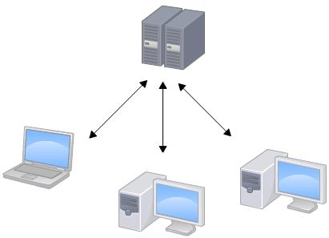</p>
<h2 id="分布式版本控制系统-GIT"><a href="#分布式版本控制系统-GIT" class="headerlink" title="分布式版本控制系统(GIT)"></a>分布式版本控制系统(GIT)</h2><p>分布式版本控制系统根本没有“中央服务器”，每个人的电脑上都是一个完整的版本库，这样工作的时候就不需要联网了。既然每个人电脑上都有一个完整的版本库，那多个人如何协作呢？比方说你在自己电脑上改了文件A，你的同事也在他的电脑上改了文件A，这时，你们俩之间只需把各自的修改推送给对方，就可以互相看到对方的修改了。</p>
<p>分布式版本控制系统的安全性要高很多，因为每个人电脑里都有完整的版本库，某一个人的电脑坏掉了不要紧，随便从其他人那里复制一个就可以了。</p>
<p>在实际使用分布式版本控制系统的时候，其实很少在两人之间的电脑上推送版本库的修改，因为可能你们俩不在一个局域网内，两台电脑互相访问不了，也可能今天你的同事病了，他的电脑压根没有开机。因此，分布式版本控制系统通常也有一台充当“中央服务器”的电脑（GITHUB或GITLAB），但这个服务器的作用仅仅是用来方便“交换”大家的修改，没有它大家也一样干活，只是交换修改不方便而已。<br>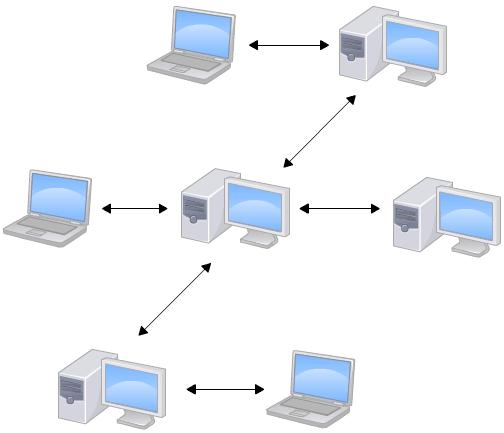</p>
<h1 id="初始化本地仓库"><a href="#初始化本地仓库" class="headerlink" title="初始化本地仓库"></a>初始化本地仓库</h1><blockquote>
<p>版本库又称为仓库，英文名repository，可以简单理解成一个文件夹，这个文件夹里面的所有文件都被Git管理起来，每个文件的修改、删除都能跟踪，以便任何时刻都可以追踪或者在还原。</p>
</blockquote>
<p>下载<a href="https://git-scm.com/" target="_blank" rel="noopener">Git</a>，安装完找到Git下Git Bash或右键选择Git Bash Here都可以打开Git命令窗口<br>切换到要初始化为仓库的文件夹，执行命令</p>
<figure class="highlight plain"><table><tr><td class="gutter"><pre><span class="line">1</span><br></pre></td><td class="code"><pre><span class="line">git init</span><br></pre></td></tr></table></figure>

<p>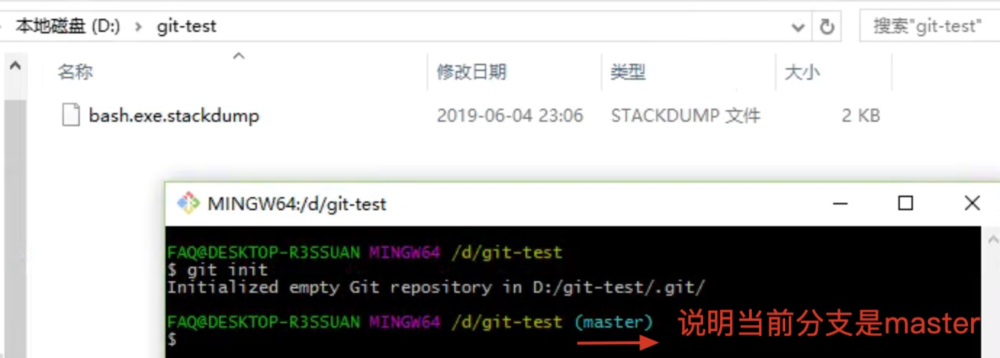<br>工作区：指初始化的目录<br>版本库：初始化后工作区下有一个隐藏目录.git，就是Git的版本库。版本库中有暂存区（Index），还有Git自动创建的第一个主分支master，以及指向master的指针HEAD。<br>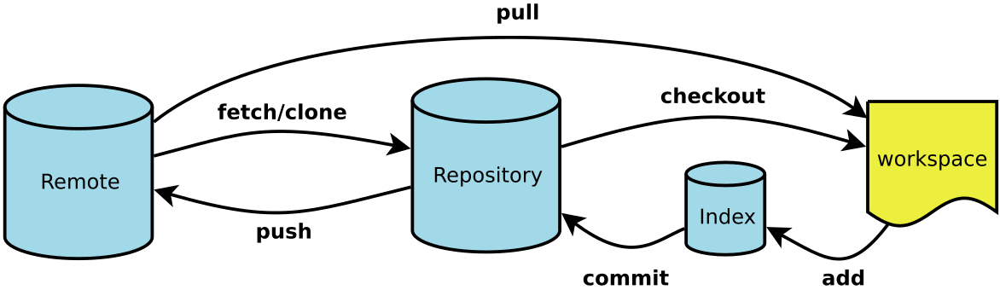</p>
<h1 id="查看"><a href="#查看" class="headerlink" title="查看"></a>查看</h1><p>查看仓库状态</p>
<figure class="highlight plain"><table><tr><td class="gutter"><pre><span class="line">1</span><br></pre></td><td class="code"><pre><span class="line">git status</span><br></pre></td></tr></table></figure>

<p>查看版本信息（即commit的记录）</p>
<figure class="highlight plain"><table><tr><td class="gutter"><pre><span class="line">1</span><br><span class="line">2</span><br><span class="line">3</span><br></pre></td><td class="code"><pre><span class="line">git log</span><br><span class="line">查看简要信息</span><br><span class="line">git log --pretty=oneline</span><br></pre></td></tr></table></figure>

<p>查看版本差异</p>
<figure class="highlight plain"><table><tr><td class="gutter"><pre><span class="line">1</span><br><span class="line">2</span><br><span class="line">3</span><br><span class="line">4</span><br><span class="line">5</span><br><span class="line">6</span><br><span class="line">7</span><br><span class="line">8</span><br><span class="line">9</span><br><span class="line">10</span><br><span class="line">11</span><br><span class="line">12</span><br></pre></td><td class="code"><pre><span class="line">比较工作区与暂存区</span><br><span class="line">git diff</span><br><span class="line">比较暂存区与最新本地版本库</span><br><span class="line">git diff --cached  [&lt;path&gt;...] </span><br><span class="line">比较工作区与最新本地版本库</span><br><span class="line">git diff HEAD [&lt;path&gt;...]</span><br><span class="line">比较工作区与指定commit-id的差异</span><br><span class="line">git diff commit-id  [&lt;path&gt;...] </span><br><span class="line">比较暂存区与指定commit-id的差异</span><br><span class="line">git diff --cached [&lt;commit-id&gt;] [&lt;path&gt;...] </span><br><span class="line">比较两个commit-id之间的差异</span><br><span class="line">git diff [&lt;commit-id&gt;] [&lt;commit-id&gt;]</span><br></pre></td></tr></table></figure>

<h1 id="文件操作"><a href="#文件操作" class="headerlink" title="文件操作"></a>文件操作</h1><p>添加文件<br>没有任何显示说明成功，Unix的哲学是“没有消息就是好消息”</p>
<figure class="highlight plain"><table><tr><td class="gutter"><pre><span class="line">1</span><br><span class="line">2</span><br><span class="line">3</span><br><span class="line">4</span><br><span class="line">5</span><br><span class="line">6</span><br><span class="line">7</span><br><span class="line">8</span><br></pre></td><td class="code"><pre><span class="line">提交单个文件</span><br><span class="line">git add TEST.txt</span><br><span class="line">提交所有变化</span><br><span class="line">git add -A  </span><br><span class="line">提交被修改(modified)和被删除(deleted)文件，不包括新文件(new)</span><br><span class="line">git add -u  </span><br><span class="line">提交新文件(new)和被修改(modified)文件，不包括被删除(deleted)文件</span><br><span class="line">git add .</span><br></pre></td></tr></table></figure>

<p>删除文件</p>
<ul>
<li>用<code>git rm</code>来删除文件，同时还会将这个删除操作记录下来；</li>
<li>用<code>rm</code>来删除文件，仅仅是删除了物理文件，没有将其从git的记录中剔除</li>
</ul>
<figure class="highlight plain"><table><tr><td class="gutter"><pre><span class="line">1</span><br><span class="line">2</span><br><span class="line">3</span><br><span class="line">4</span><br><span class="line">5</span><br><span class="line">6</span><br><span class="line">7</span><br><span class="line">8</span><br></pre></td><td class="code"><pre><span class="line">删除文件</span><br><span class="line">git rm test.file</span><br><span class="line">git commit -m &quot;delete test.file&quot;</span><br><span class="line">或者</span><br><span class="line">rm test.file</span><br><span class="line">git commit -am &quot;delete test.file&quot;</span><br><span class="line">切换到要删除文件的目录下，批量删除文件</span><br><span class="line">git rm * -r</span><br></pre></td></tr></table></figure>

<p>提交文件</p>
<figure class="highlight plain"><table><tr><td class="gutter"><pre><span class="line">1</span><br></pre></td><td class="code"><pre><span class="line">git commit -m &apos;commit TEST&apos;</span><br></pre></td></tr></table></figure>

<h1 id="撤销修改"><a href="#撤销修改" class="headerlink" title="撤销修改"></a>撤销修改</h1><p>正常GIT工作流程为3个步骤：(工作区) -&gt; add(提交暂存区) -&gt; commit(提交本地仓库) -&gt; push(提交远程仓库)<br>对应产生5中状态：未修改(Origin) 、已修改(Modified) 、已暂存(Staged) 、已提交(Committed) 、已推送(Pushed)</p>
<h2 id="已修改，未暂存"><a href="#已修改，未暂存" class="headerlink" title="已修改，未暂存"></a>已修改，未暂存</h2><p>checkout命令是把在工作区的修改撤销，有两种情况：</p>
<ol>
<li>修改后还没有被放到暂存区，那就会回退到版本库</li>
<li>已经添加到暂存区后，那就会回退到暂存区</li>
</ol>
<figure class="highlight plain"><table><tr><td class="gutter"><pre><span class="line">1</span><br><span class="line">2</span><br><span class="line">3</span><br><span class="line">4</span><br></pre></td><td class="code"><pre><span class="line">撤销单个文件修改</span><br><span class="line">git checkout -- TEST.txt</span><br><span class="line">撤销所有文件修改</span><br><span class="line">git checkout .</span><br></pre></td></tr></table></figure>

<h2 id="已暂存，未提交"><a href="#已暂存，未提交" class="headerlink" title="已暂存，未提交"></a>已暂存，未提交</h2><p>把最近一次提交的版本替换到暂存区 ，此操作不影响工作区</p>
<figure class="highlight plain"><table><tr><td class="gutter"><pre><span class="line">1</span><br></pre></td><td class="code"><pre><span class="line">git reset HEAD .</span><br></pre></td></tr></table></figure>

<h2 id="已提交，未推送-版本回退"><a href="#已提交，未推送-版本回退" class="headerlink" title="已提交，未推送(版本回退)"></a>已提交，未推送(版本回退)</h2><p>在Git中，用HEAD表示当前版本，上一个版本就是HEAD^，上上一个版本就是HEAD^^，当然往上100个版本可以写成HEAD~100<br>回退到上一版本（即：把当前分支最近一次提交版本覆盖到工作区，把暂存区的修改全部撤销）：</p>
<figure class="highlight plain"><table><tr><td class="gutter"><pre><span class="line">1</span><br></pre></td><td class="code"><pre><span class="line">git reset --hard HEAD^</span><br></pre></td></tr></table></figure>

<p>Tips：回退后会看不到之前的版本号，可以用git reflog查看执行过的命令。如下查到回退前commit id为e4c3f5f，这样就可以用来回退到e4c3f5f</p>
<figure class="highlight plain"><table><tr><td class="gutter"><pre><span class="line">1</span><br><span class="line">2</span><br><span class="line">3</span><br><span class="line">4</span><br><span class="line">5</span><br><span class="line">6</span><br><span class="line">7</span><br></pre></td><td class="code"><pre><span class="line">git reflog</span><br><span class="line"></span><br><span class="line">5ac930c HEAD@&#123;0&#125;: reset: moving to HEAD^</span><br><span class="line">e4c3f5f HEAD@&#123;1&#125;: commit: commit 2 TEST</span><br><span class="line"></span><br><span class="line">#回退</span><br><span class="line">git reset --hard e4c3f5f</span><br></pre></td></tr></table></figure>

<p>Tips：Git的版本回退速度非常快，因为Git在内部有个指向当前版本的HEAD指针，当回退版本的时候，Git仅仅是把HEAD指针指向回退的版本</p>
<h2 id="已推送"><a href="#已推送" class="headerlink" title="已推送"></a>已推送</h2><p>因为本地仓库和远程仓库是等价的，所以只需要先恢复本地仓库，再强制push到远程仓库即可</p>
<figure class="highlight plain"><table><tr><td class="gutter"><pre><span class="line">1</span><br><span class="line">2</span><br></pre></td><td class="code"><pre><span class="line">git reset --hard HEAD^</span><br><span class="line">git push -u origin master</span><br></pre></td></tr></table></figure>

<h1 id="分支管理"><a href="#分支管理" class="headerlink" title="分支管理"></a>分支管理</h1><p>每次提交，Git都把它们串成一条时间线，这条时间线就是一个分支。主分支即master分支。HEAD严格来说不是指向提交，而是指向master，master才是指向提交的，所以，HEAD指向的就是当前分支。<br>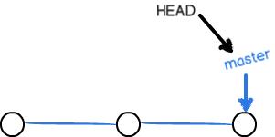<br>当我们创建新的分支，例如dev时，Git新建了一个指针叫dev，指向master相同的提交，再把HEAD指向dev，就表示当前分支在dev上：<br>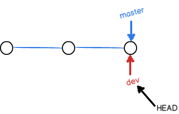<br>Git创建一个分支很快，因为除了增加一个dev指针，改改HEAD的指向，工作区的文件都没有任何变化<br>不过，从现在开始，对工作区的修改和提交就是针对dev分支了，比如新提交一次后，dev指针往前移动一步，而master指针不变：<br>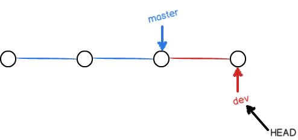<br>假如我们在dev上的工作完成了，就可以把dev合并到master上。Git怎么合并呢？最简单的方法，就是直接把master指向dev的当前提交，就完成了合并：<br>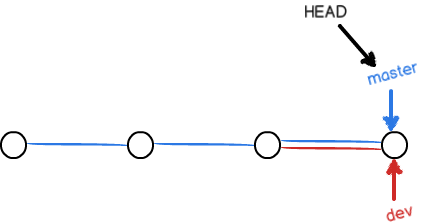<br>合并完分支后，甚至可以删除dev分支。删除dev分支就是把dev指针给删掉，删掉后，我们就剩下了一条master分支：<br>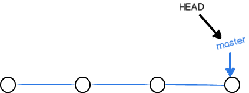</p>
<h2 id="分支操作"><a href="#分支操作" class="headerlink" title="分支操作"></a>分支操作</h2><p>创建分支：</p>
<figure class="highlight plain"><table><tr><td class="gutter"><pre><span class="line">1</span><br></pre></td><td class="code"><pre><span class="line">git branch dev</span><br></pre></td></tr></table></figure>

<p>切换分支：</p>
<figure class="highlight plain"><table><tr><td class="gutter"><pre><span class="line">1</span><br></pre></td><td class="code"><pre><span class="line">git checkout dev</span><br></pre></td></tr></table></figure>

<p>查看分支：</p>
<figure class="highlight plain"><table><tr><td class="gutter"><pre><span class="line">1</span><br><span class="line">2</span><br><span class="line">3</span><br><span class="line">4</span><br></pre></td><td class="code"><pre><span class="line">查看分支名称</span><br><span class="line">git branch</span><br><span class="line">查看分支树状结构</span><br><span class="line">git log --graph --pretty=oneline --abbrev-commit</span><br></pre></td></tr></table></figure>

<p>合并分支：用于合并指定分支到当前分支</p>
<figure class="highlight plain"><table><tr><td class="gutter"><pre><span class="line">1</span><br></pre></td><td class="code"><pre><span class="line">git merge dev</span><br></pre></td></tr></table></figure>

<p>删除分支：</p>
<figure class="highlight plain"><table><tr><td class="gutter"><pre><span class="line">1</span><br><span class="line">2</span><br><span class="line">3</span><br><span class="line">4</span><br><span class="line">5</span><br><span class="line">6</span><br></pre></td><td class="code"><pre><span class="line">删除分支</span><br><span class="line">git branch -d dev</span><br><span class="line">一个没有被合并过的分支，如果要强行删除，需要使用大写的-D参数</span><br><span class="line">git branch -D test</span><br><span class="line">删除远程分支</span><br><span class="line">git branch origin :dev</span><br></pre></td></tr></table></figure>

<p>简化分支线：<br>把分叉的提交历史“整理”成一条直线，看上去更直观，缺点是本地的分叉提交会被修改</p>
<figure class="highlight plain"><table><tr><td class="gutter"><pre><span class="line">1</span><br></pre></td><td class="code"><pre><span class="line">git rebase</span><br></pre></td></tr></table></figure>

<h1 id="远程仓库"><a href="#远程仓库" class="headerlink" title="远程仓库"></a>远程仓库</h1><h2 id="通过SHH验证"><a href="#通过SHH验证" class="headerlink" title="通过SHH验证"></a>通过SHH验证</h2><p>添加SSH KEY，不然无法推送数据到GITHUB<br>先在本地生成SSH key：</p>
<figure class="highlight plain"><table><tr><td class="gutter"><pre><span class="line">1</span><br></pre></td><td class="code"><pre><span class="line">ssh-keygen -t rsa -C &quot;XXXXX@QQ.COM&quot;</span><br></pre></td></tr></table></figure>

<p>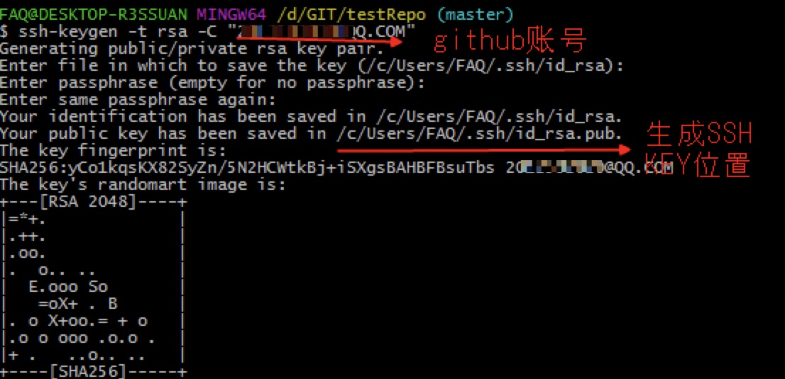<br>用查看生成的KEY信息<br>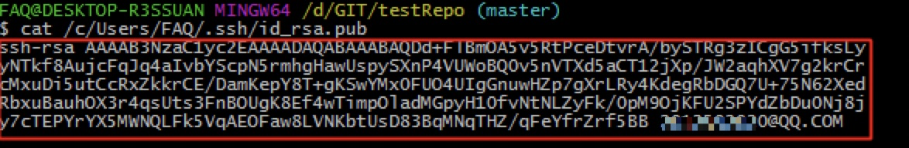<br>填写到GITHUB中<br>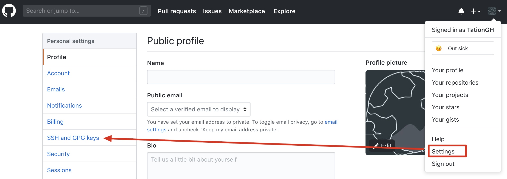<br>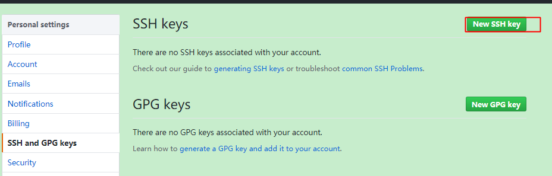<br>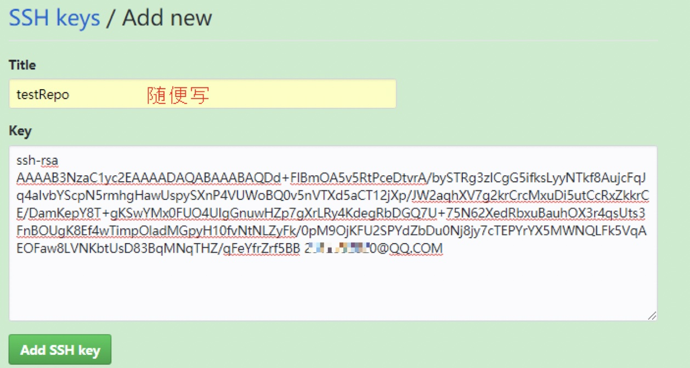</p>
<h2 id="新建远程仓库"><a href="#新建远程仓库" class="headerlink" title="新建远程仓库"></a>新建远程仓库</h2><p>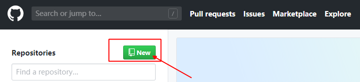<br>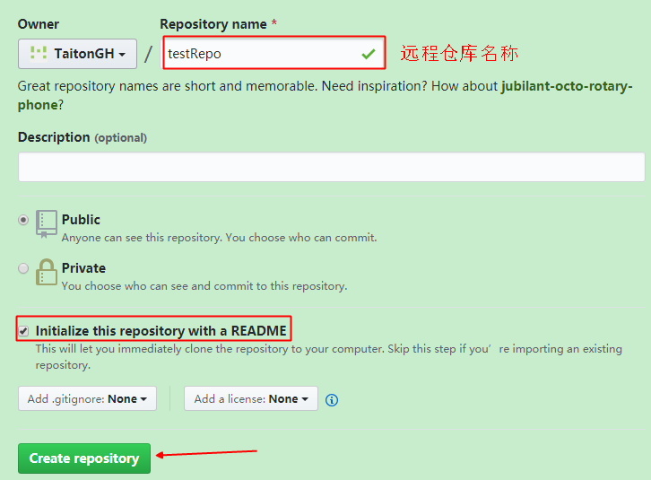</p>
<h2 id="克隆远程仓库"><a href="#克隆远程仓库" class="headerlink" title="克隆远程仓库"></a>克隆远程仓库</h2><p>选择SSH验证，复制链接信息：<br>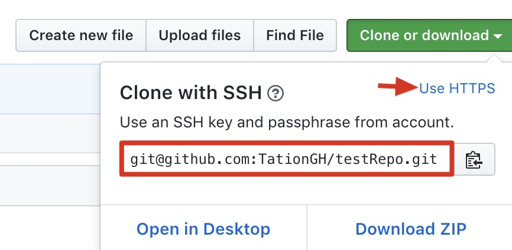<br>打开Git Bash Here克隆远程仓库</p>
<figure class="highlight plain"><table><tr><td class="gutter"><pre><span class="line">1</span><br></pre></td><td class="code"><pre><span class="line">git clone git@github.com:TationGH/testRepo.git</span><br></pre></td></tr></table></figure>

<h2 id="新建分支"><a href="#新建分支" class="headerlink" title="新建分支"></a>新建分支</h2><p>输入新建分支名，回车，下面会出现创建分支的选项，点击即可创建分支<br>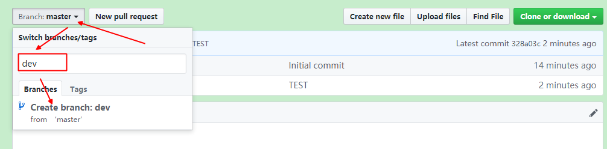<br>后续就可以选择到新的分支了<br>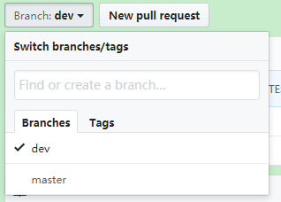<br>如果远程仓库建了dev分支，本地仓库未建此dev分支，可以将远程dev分支拉取到本地</p>
<figure class="highlight plain"><table><tr><td class="gutter"><pre><span class="line">1</span><br></pre></td><td class="code"><pre><span class="line">git checkout -b dev origin/dev</span><br></pre></td></tr></table></figure>

<p>如果非上一步操作，而是本地和远程都单独建了dev分支，那就要先把两者先关联起来</p>
<figure class="highlight plain"><table><tr><td class="gutter"><pre><span class="line">1</span><br></pre></td><td class="code"><pre><span class="line">git branch --set-upstream-to=origin/dev dev</span><br></pre></td></tr></table></figure>

<h2 id="查看-1"><a href="#查看-1" class="headerlink" title="查看"></a>查看</h2><p>查看远程仓库库信息：</p>
<figure class="highlight plain"><table><tr><td class="gutter"><pre><span class="line">1</span><br></pre></td><td class="code"><pre><span class="line">git remote -v</span><br></pre></td></tr></table></figure>

<h2 id="推送"><a href="#推送" class="headerlink" title="推送"></a>推送</h2><p>推送当前分支到远程master分支</p>
<figure class="highlight plain"><table><tr><td class="gutter"><pre><span class="line">1</span><br></pre></td><td class="code"><pre><span class="line">git push origin master</span><br></pre></td></tr></table></figure>

<h2 id="拉取"><a href="#拉取" class="headerlink" title="拉取"></a>拉取</h2><p>git fetch：<br>拉取时不会把远程分支版本合并当前分支上，而是将远程分支版本放到一个隐藏的commit，可以通过diff对比两个版本的差异，这样操作更安全，一般执行流程如下</p>
<figure class="highlight plain"><table><tr><td class="gutter"><pre><span class="line">1</span><br><span class="line">2</span><br><span class="line">3</span><br><span class="line">4</span><br><span class="line">5</span><br><span class="line">6</span><br></pre></td><td class="code"><pre><span class="line">拉取分支</span><br><span class="line">git fetch origin dev</span><br><span class="line">对比差异</span><br><span class="line">git diff origin/dev</span><br><span class="line">合并分支</span><br><span class="line">git merge origin/dev</span><br></pre></td></tr></table></figure>

<p>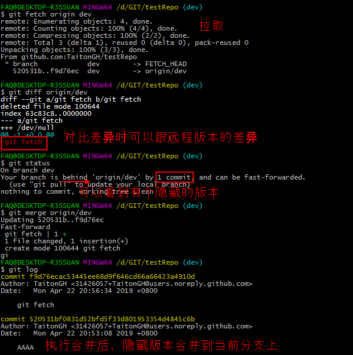<br>git pull：<br>相当于：git pull = git fetch + git merge<br>少用git pull，用git fetch和git merge代替它</p>
<figure class="highlight plain"><table><tr><td class="gutter"><pre><span class="line">1</span><br></pre></td><td class="code"><pre><span class="line">git pull origin dev</span><br></pre></td></tr></table></figure>

<h2 id="解决冲突"><a href="#解决冲突" class="headerlink" title="解决冲突"></a>解决冲突</h2><p>如果不同分支都对同一文件进行修改，合并有可能会提示冲突，大致输出错误信息如下：</p>
<figure class="highlight plain"><table><tr><td class="gutter"><pre><span class="line">1</span><br><span class="line">2</span><br><span class="line">3</span><br></pre></td><td class="code"><pre><span class="line">Auto-merging README.md</span><br><span class="line">CONFLICT (content): Merge conflict in README.md  #合并发生冲突</span><br><span class="line">Automatic merge failed; fix conflicts and then commit the result.</span><br></pre></td></tr></table></figure>

<p>打开冲突文件可以看到git将冲突内容用符号分割，内容大致如下：</p>
<figure class="highlight plain"><table><tr><td class="gutter"><pre><span class="line">1</span><br><span class="line">2</span><br><span class="line">3</span><br><span class="line">4</span><br><span class="line">5</span><br></pre></td><td class="code"><pre><span class="line">&lt;&lt;&lt;&lt;&lt;&lt;&lt; HEAD</span><br><span class="line">11111</span><br><span class="line">=======</span><br><span class="line">22222</span><br><span class="line">&gt;&gt;&gt;&gt;&gt;&gt;&gt; dev</span><br></pre></td></tr></table></figure>

<p>Git用&lt;&lt;&lt;&lt;&lt;&lt;&lt;，=======，&gt;&gt;&gt;&gt;&gt;&gt;&gt;标记出不同分支两个版本冲突的内容，我们修改保存其中一个版本后，就可以重新提交后合并</p>
<h1 id="存储现场"><a href="#存储现场" class="headerlink" title="存储现场"></a>存储现场</h1><p>如果dev分支做了修改已add但不想commit，而此时需要用master开分支ISSUE-1修改BUG后提交，如果在ISSUE-1上修改会影响到工作区。可以把当前工作现场存储下来，工作区恢复到最后一次提交状态，等ISSUE提交完再恢复回来</p>
<figure class="highlight plain"><table><tr><td class="gutter"><pre><span class="line">1</span><br></pre></td><td class="code"><pre><span class="line">git stash</span><br></pre></td></tr></table></figure>

<p>查看存储的工作现场：</p>
<figure class="highlight plain"><table><tr><td class="gutter"><pre><span class="line">1</span><br></pre></td><td class="code"><pre><span class="line">git stash list</span><br></pre></td></tr></table></figure>

<p>恢复工作现场：</p>
<figure class="highlight plain"><table><tr><td class="gutter"><pre><span class="line">1</span><br><span class="line">2</span><br><span class="line">3</span><br><span class="line">4</span><br><span class="line">5</span><br><span class="line">6</span><br></pre></td><td class="code"><pre><span class="line">恢复最新的stash，stash内容并不删除，你需要用git stash drop来删除</span><br><span class="line">git stash apply</span><br><span class="line">恢复指定的stash</span><br><span class="line">git stash apply stash@&#123;0&#125; </span><br><span class="line">恢复的同时把stash内容也删除</span><br><span class="line">git stash pop</span><br></pre></td></tr></table></figure>

<h1 id="标签管理"><a href="#标签管理" class="headerlink" title="标签管理"></a>标签管理</h1><p>标签就是跟某个commit绑在一起有意义的名字，标签都只存储在本地，不会自动推送到远程<br>给commit id（f52c633）打上标签，用-a指定标签名，-m指定说明文字</p>
<figure class="highlight plain"><table><tr><td class="gutter"><pre><span class="line">1</span><br></pre></td><td class="code"><pre><span class="line">git tag -a v0.1 -m &quot;version 0.1 released&quot; 1094adb</span><br></pre></td></tr></table></figure>

<p>查看标签</p>
<figure class="highlight plain"><table><tr><td class="gutter"><pre><span class="line">1</span><br></pre></td><td class="code"><pre><span class="line">git show</span><br></pre></td></tr></table></figure>

<p>删除标签：</p>
<figure class="highlight plain"><table><tr><td class="gutter"><pre><span class="line">1</span><br></pre></td><td class="code"><pre><span class="line">git tag -d v1</span><br></pre></td></tr></table></figure>

<p>推送标签到远程仓库：</p>
<figure class="highlight plain"><table><tr><td class="gutter"><pre><span class="line">1</span><br><span class="line">2</span><br><span class="line">3</span><br><span class="line">4</span><br></pre></td><td class="code"><pre><span class="line">#推送某个标签到远程</span><br><span class="line">git push origin v1</span><br><span class="line">#一次性推送全部尚未推送到远程的本地标签</span><br><span class="line">git push origin --tags</span><br></pre></td></tr></table></figure>

<p>删除远程仓库标签：</p>
<figure class="highlight plain"><table><tr><td class="gutter"><pre><span class="line">1</span><br><span class="line">2</span><br></pre></td><td class="code"><pre><span class="line">git tag -d v1</span><br><span class="line">git push origin :refs/tags/v1</span><br></pre></td></tr></table></figure>

<h1 id="忽略文件"><a href="#忽略文件" class="headerlink" title="忽略文件"></a>忽略文件</h1><p>使用文本编辑器创建一个.gitignore文件，提交到git，这样.gitignore文件里面写的文件名将被git忽略</p>
<figure class="highlight plain"><table><tr><td class="gutter"><pre><span class="line">1</span><br><span class="line">2</span><br><span class="line">3</span><br></pre></td><td class="code"><pre><span class="line"># gitignore file:</span><br><span class="line">test.txt</span><br><span class="line">*.exe</span><br></pre></td></tr></table></figure>
      
    </div>
    <footer class="article-footer">
      <a data-url="http://yoursite.com/2019/06/08/002-GIT/" data-id="cjwnmshs90001wcwoe48zxe4n" class="article-share-link">Share</a>
      
      
    </footer>
  </div>
  
    
<nav id="article-nav">
  
  
    <a href="/2019/06/08/hello-world/" id="article-nav-older" class="article-nav-link-wrap">
      <strong class="article-nav-caption">Older</strong>
      <div class="article-nav-title">Hello World</div>
    </a>
  
</nav>

  
</article>

</section>
        
          <aside id="sidebar">
  
    

  
    

  
    
  
    
  <div class="widget-wrap">
    <h3 class="widget-title">Archives</h3>
    <div class="widget">
      <ul class="archive-list"><li class="archive-list-item"><a class="archive-list-link" href="/archives/2019/06/">June 2019</a></li></ul>
    </div>
  </div>


  
    
  <div class="widget-wrap">
    <h3 class="widget-title">Recent Posts</h3>
    <div class="widget">
      <ul>
        
          <li>
            <a href="/2019/06/08/002-GIT/">002-GIT</a>
          </li>
        
          <li>
            <a href="/2019/06/08/hello-world/">Hello World</a>
          </li>
        
      </ul>
    </div>
  </div>

  
</aside>
        
      </div>
      <footer id="footer">
  
  <div class="outer">
    <div id="footer-info" class="inner">
      &copy; 2019 John Doe<br>
      Powered by <a href="http://hexo.io/" target="_blank">Hexo</a>
    </div>
  </div>
</footer>
    </div>
    <nav id="mobile-nav">
  
    <a href="/" class="mobile-nav-link">Home</a>
  
    <a href="/archives" class="mobile-nav-link">Archives</a>
  
</nav>
    

<script src="//ajax.googleapis.com/ajax/libs/jquery/2.0.3/jquery.min.js"></script>


  <link rel="stylesheet" href="/fancybox/jquery.fancybox.css">
  <script src="/fancybox/jquery.fancybox.pack.js"></script>


<script src="/js/script.js"></script>


  </div>
</body>
</html>